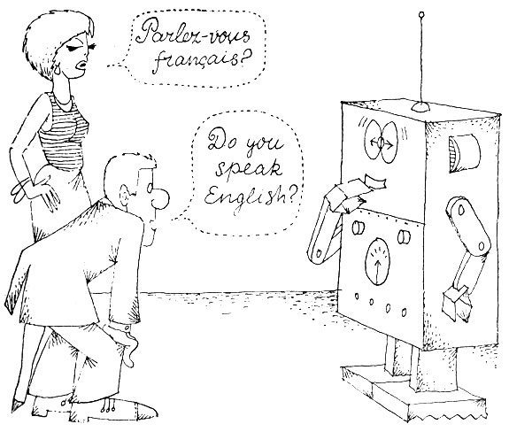
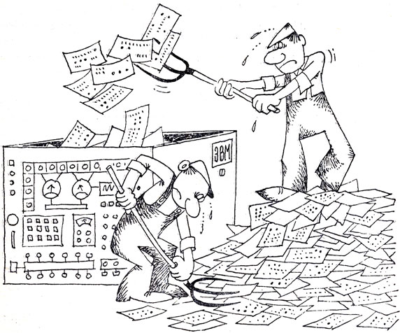
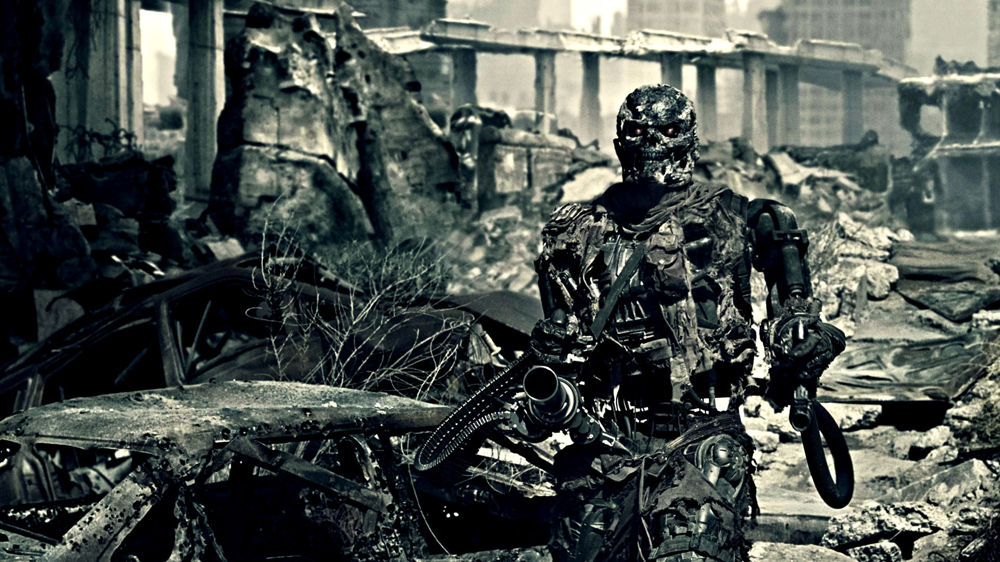
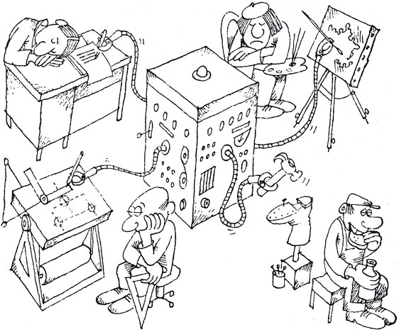

Проблематика
На сегодняшний день можно выделить следующи проблемы кибернетики: Проблема №1: Несовершенство Искусствнного Интелекта Одним из основных, камнем преткновения в развитии кибернетики является отсутствие практического формального языка для записи математических предложений и доказательств. Этот язык должен быть близким к естественному языку математики и фактически представлять собой формализацию той части естественного языка, на котором пишутся книги по математике. Реализацией языка математики является "алгоритм очевидности", который проверяет правильность математических утверждений, написанных в языке, если доказательства достаточно подробны, или находит в них пробелы, требующие расшифровки.
Один из отцов аналитической философии Людвиг Витгенштейн считал, что все доступные нам законы мышления и реальности запечатаны в логике языка. Никакой другой логики у мысли нет, мышление целиком совпадает со структурами языка. Язык выполняет две функции: обмен информацией между индивидуумами и создание моделей действительности.
Отсюда и вырастают остальные нерешимые, на сегодняшний день, проблемы моделирования искусственного интеллекта.
Главным отличием человеческого мозга от искусственного интеллекта является гибкость мышления (ассоциативное мышление, воображение) и интуитивное восприятие. Даже маленький ребенок может отличить кошку от собаки, но для того, чтобы это смогла сделать машина нужен очень сложный алгоритм, который требуется в каждой ситуации, где требуется принимать решение. То есть машина не обладает возможностью невербального восприятия (эмоции, чувства). Проще говоря творческого мышления, которое можно разделить на три этапа: сознательная активизация накопленных знаний, интуитивный скачок к новому пониманию и логическая оценка его справедливости.
Проблема №2: Обучаемость
 Так же проблемой и направлением современной кибернетики является накопление опыта машиной - то есть обучаемость. Доктор Винер первым поставил задачу по решению данной проблемы, разработав математический алгоритм для "выхода мыши из лабиринта" - мышь бегала по ходам лабиринта, утыкалась в тупики, возвращалась обратно. При этом она запоминала "неправильные ходы", никогда не повторяла их и в результате приходила к цели. Но самое главное в другом: при повторном прохождении лабиринта мышь достигала цели кратчайшим путем. То есть она училась, использовала накопленный опыт. На основе этого появились компьютерные программы, способные обыграть в шахматы мировых чемпионов. Они способны накапливать и учитывать опыт сыгранных партий, но опять же, расчет шахматных задач происходит в рамках формальной логики замкнутой математической системы, что не требует дополнительных задач, кроме просчета имеющихся и возможных позиций всех фигур на доске. На данный момент факт обыгрывания компьютером человека сводится только к двум причинам - наличию алгоритма и большим мощностям современных компьютеров. Опять же, накопление подобного опыта требует как математических, так и технологических решений - создания баз данных, алгоритмов обращения к ним, оптимизации и прочее.
Проблема №3: Возможные последствия
 Еще одним интересным моментом современной кибернетики является огромное количество антиутопических книг и фильмов, вошедших в нашу культуру, повествующих о поработивших мир компьютерах которые вдруг стали умнее человека и решили, что человек им не нужен, или нужен, но в сугубо утилитарных целях. Развитие этих идей тоже несложно последить. Начиная с С. Лема, "Космическая Одиссея 2006", можно увидеть, что компьютер, пользуясь формальной логикой, рассчитывает, что полет будет неудачным и бунтует. После того, как его хотят выключить - пытается предотвратить действия экипажа. В кинофильме "Терминатор" и некоторых подобных, мы наблюдаем картину угрозы ядерной войны, развязанной машинами, вследствие опять же с их логическим решение покончить со всеми врагами сразу. На примере этих двух произведений можно сделать вывод, что сильная сторона искусственного интеллекта, то есть формальная логика и беспристрастность становятся камнем преткновения, когда компьютер делает логически обоснованный, но далеко не верный вывод, а мощность и интеллект становятся идеальным инструментом в руках электронного тирана. Еще одно направление - это наоборот очеловечивание машины и превращение в новую форму развития эволюции. Эти идеи высказывал Айзак Азимов, Роджер Желязны, Олди в фильме "Я робот". То есть когда машина помимо огромных интеллектуальных и вычислительных возможностей получает и человеческие. Новая форма наследует лучшие стороны и людей и машин. Примечательно то, что почему-то в данных произведениях новые существа так и не становятся счастливыми. Третий вариант "Матрица", повествует совсем о мрачном будущем, кстати именно в нем воплощен современный принцип воспроизводства и саморазвития машин, когда компьютеры производят компьютеры. Катастрофа происходит после того, как человек отменяет один из "законов робототехники", Айзака Азимова - "робот не может причинить вреда человеку". Вообще проблема искусственного интеллекта, как и проблема клонирования - одна из наиболее обсуждаемых проблем в мире.
Проблема №4: Социальная
 Роль человека становится все меньше и меньше, потому что машина все делает лучше. Кстати в данный момент эту тенденцию можно видеть на производстве в высокоразвитых странах - заводы автоматизируются, рабочего сменяет робот, а бригадира – системный администратор. Что приводит к снижению количества рабочих мест, хотя и позволяет предприятиям получать большую прибыль. Люди идут в сферу обслуживания, развлечений, экономики и финансов, культуры. С повышением уровня жизни снижается рождаемость и т.д. и т.п. С изменением формы труда, перехода с ручного на интеллектуальный происходит и изменение в развитие тела человека – удлинение пальцев, увеличение объема головного мозга, уменьшение мышечной массы и пищеварительной системы, усиление зрительного аппарата, изменение осанки. Также, постепенно внедряясь во все области жизни автоматизация постепенно не оставляет места человеку и люди, управляющие этими машинами обретают огромную власть.